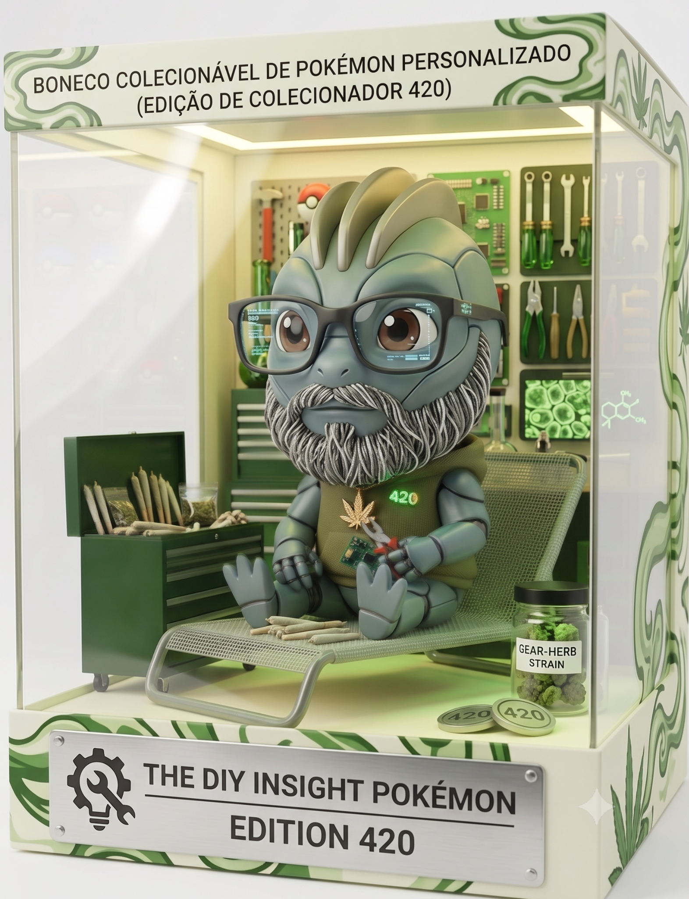
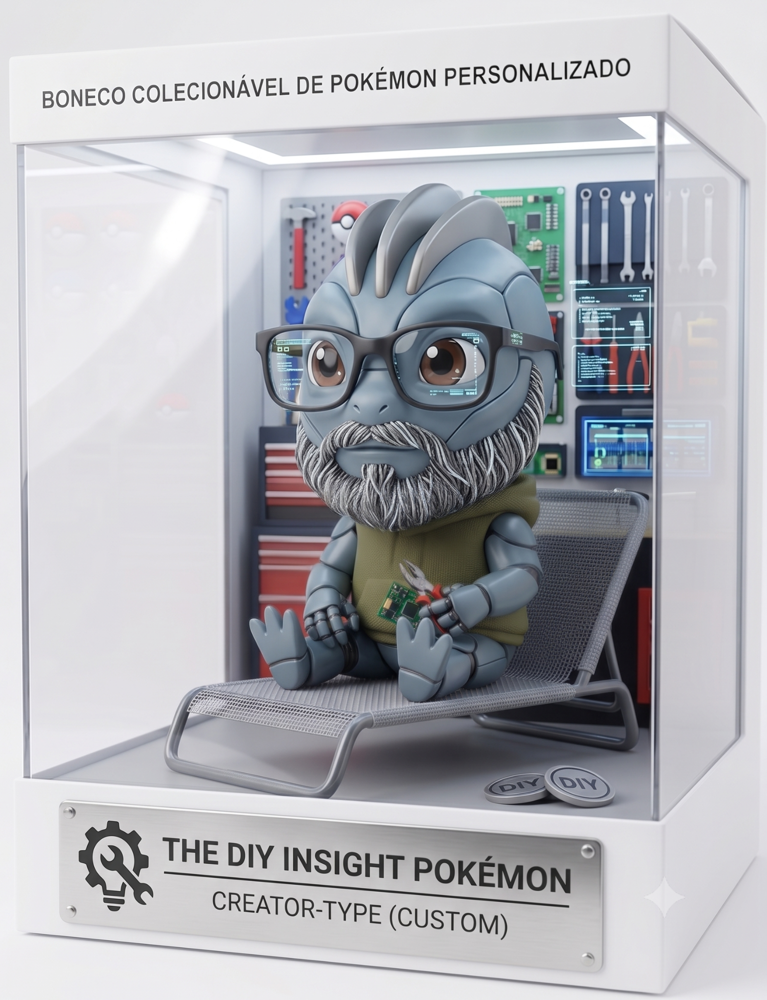
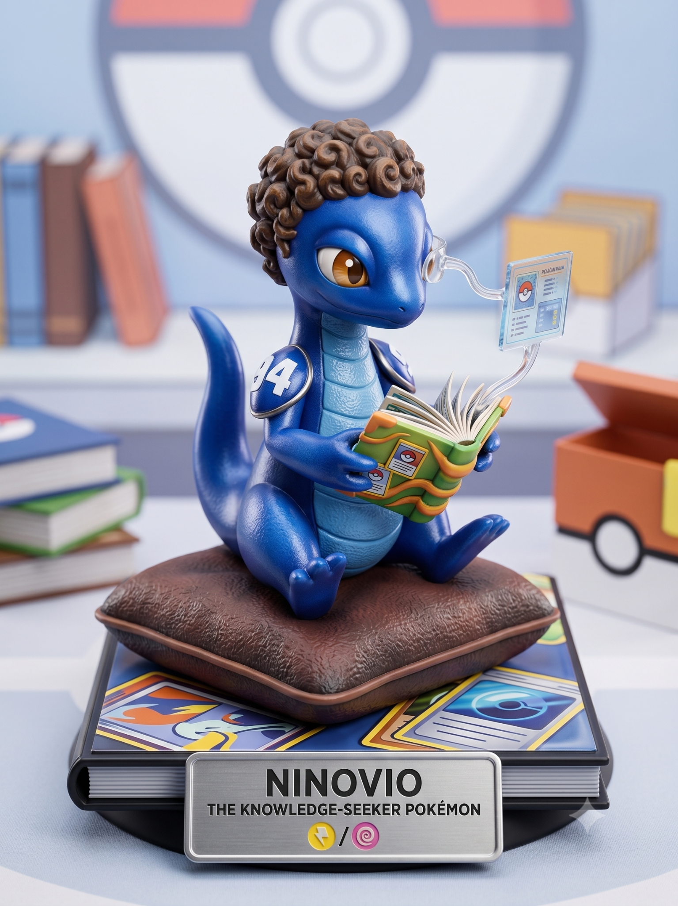
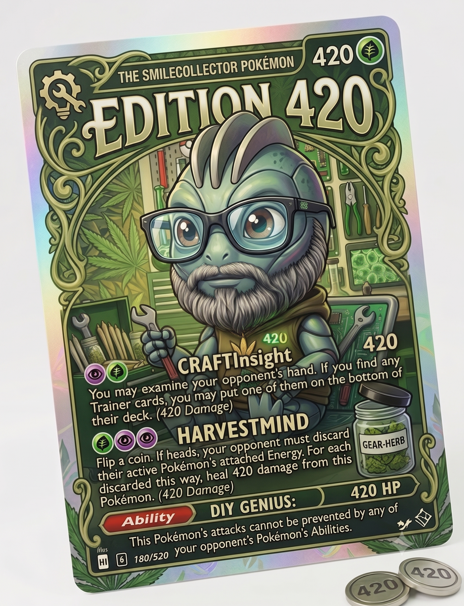
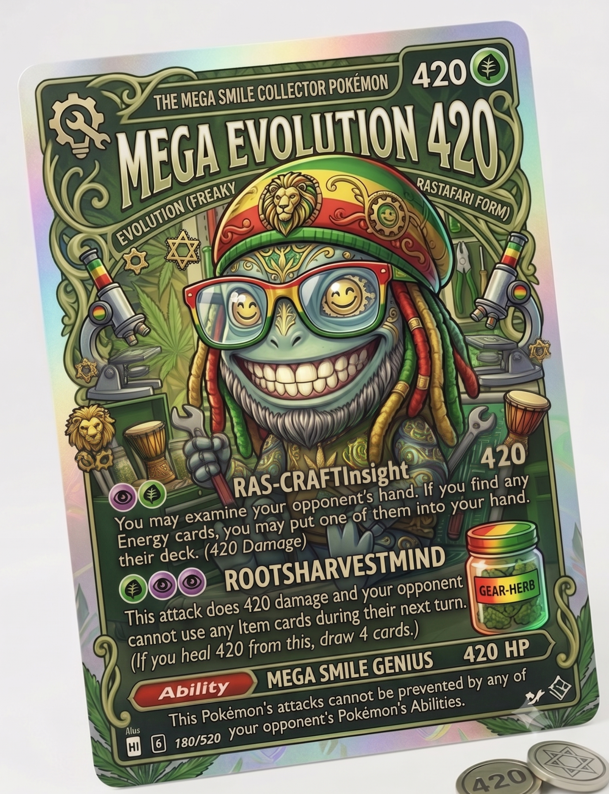
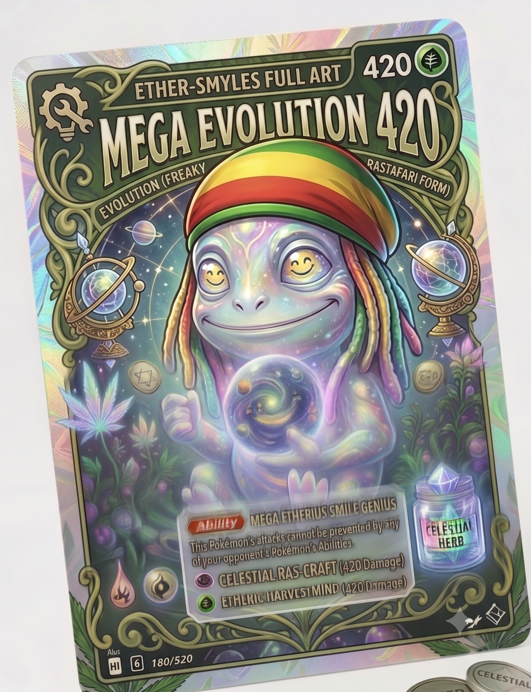

“Já enviámos várias propostas. Continuam sem responder. A investigação prossegue.”
FIELD VERIFIEDLAB-MADECANON + CONSEQUÊNCIASPROBABLY A BAD IDEA
O Lab não inventa factos Pokémon. Isso seria preguiça. Pokémon já nos fornece material mais estranho do que qualquer pessoa sensata precisa.
Aqui fazemos outra coisa: encontramos um facto verificável, aceitamos a premissa sem discutir e perguntamos o que acontece a seguir. Se Farfetch’d carrega uma planta que também pode servir de alimento, alguém vai acabar por perguntar pelo livro de receitas. Se Psyduck tem dores de cabeça tão fortes que desencadeiam poderes que depois nem recorda, alguém terá de tentar traduzir os avisos.
CANON SEED
→
PERGUNTA DESNECESSÁRIA
→
ARTEFACTO
Regra de ferro: tudo o que é inventado pelo Smilecollector é marcado como tal. Uma carta falsa pode ser uma óptima peça de ficção. Continua a ser falsa. Um Pokémon inventado pode ter um dossier completo. Continua a ter exactamente zero entradas oficiais na Pokédex.
[ segurança: se uma experiência começar a parecer canon, aumentar imediatamente o tamanho do carimbo LAB-MADE ]
DOSSIER ARCHIVE
Investigações recuperadas do Lab. Algumas começaram com uma entrada da Pokédex; outras com uma pergunta que devia ter ficado quieta.
LAB-MADENOT FOR RESALE AS REAL TCG
O caso da Edição 420
Ou: o momento exacto em que “vou fazer só uma imagem” deixou de ser verdade.
Começou com uma ideia relativamente pequena: transformar o próprio coleccionador — o tio — num daqueles objectos absurdamente específicos que só fariam sentido dentro de uma vitrina. Óculos, barba, bancada, ferramentas, um ar de quem desmontou alguma coisa e ainda não decidiu se a volta a montar.
Depois apareceu a placa THE DIY INSIGHT POKÉMON. Depois apareceu uma edição. Depois a edição ganhou o número 420. Depois alguém, infelizmente, percebeu que uma edição pode ter uma carta.

Prototype A — embalagem que já parece ter demasiada confiança em si própria.

Prototype B — menos botânica, mais oficina. O comité ficou dividido.
É importante documentar isto correctamente: não existe um “DIY Insight Pokémon” oficial. Não existe uma Collector Edition 420 da Pokémon Company. Não existe qualquer razão para haver moedas 420 no chão da embalagem. Tudo isto foi produzido no Lab e, portanto, está exactamente onde deve estar.
SPECIMEN FILE #014 — Ninovio

Ninovio é o Mateus. O sobrinho que, sem saber, começou esta confusão toda quando recebeu o primeiro booster e acabou por arrastar o tio para o buraco sem fundo dos binders, sleeves e cartas brilhantes.
Se a Edition 420 é o tio transformado em Pokémon de bancada, o SPECIMEN FILE #014 é o Mateus passado pelo mesmo filtro pouco responsável do Lab: curioso, concentrado e capaz de ficar horas a estudar cartas como se estivesse a decifrar documentação classificada.
Classificação: The Knowledge-Seeker Pokémon. Estado de canon: inexistente. Comportamento observado: abre um livro para confirmar uma coisa simples, encontra uma nota de rodapé, desaparece durante quatro horas e regressa com sete novas perguntas.
[ hipótese evolutiva rejeitada: “Professor Oak, mas azul e com cauda”. Demasiado perigosa. ]
Do boneco para o TCG — porque aparentemente não havia travões

Custom card 01 — ataques e números são deliberadamente fictícios.

Custom card 02 — Mega Evolution não autorizada por absolutamente ninguém.

O estágio final abandonou qualquer tentativa de moderação e entrou no território ETHER-SMILES FULL ART. Aqui o Lab já não está a documentar Pokémon. Está a documentar o que acontece quando o botão “mais” deixa de ter supervisão.
LAB CONCLUSION: a cadeia evolutiva de uma ideia não precisa de fazer sentido. Precisa apenas de alguém que continue a clicar “generate”.
CANON + CONSEQUÊNCIASSEED VERIFIED
As receitas perdidas de Farfetch’d
Uma investigação culinária que começou mal no exacto momento em que percebemos que o pato traz o acompanhamento.
Farfetch’d está inseparavelmente associado ao caule que transporta e defende; a forma de Galar usa alhos-porros particularmente grossos e resistentes em combate. Compilações das entradas e material oficial também registam o caule como material de ninho e alimento de emergência.
Há factos Pokémon que abrem uma porta. Este abre um restaurante.
Se um Farfetch’d carrega o mesmo caule para combate, construção e emergência alimentar, existe uma conclusão perfeitamente desnecessária: em algum momento teve de desenvolver opiniões sobre preparação. O que se segue é reconstrução culinária do Smilecollector Lab. Nenhuma destas receitas existe no canon. Ainda.
1. Sopa de alho-francês e batata — Poffin Style
A opção conservadora. Fatias finas do caule, batata, caldo e algumas Oran Berries porque alguém no laboratório decidiu que “Pokémon” não estava suficientemente visível na receita.
Nota técnica: a perda temporária de poder crítico após cortar o caule é completamente inventada. O sabor também.
2. Salteado de Cherubi com alho-porro e ervas
A versão de alta cozinha. O caule serve de ingrediente, utensílio e, caso apareça um Greedent, sistema de segurança da cozinha. O Cherubi desta reconstrução é um elemento ficcional da receita; não existe qualquer fonte oficial que recomende salteá-lo.
3. Refogado de cogumelos Paras
Teoricamente aromático. Eticamente dependente de obter os cogumelos sem transformar o jantar numa investigação criminal. O Lab recomenda, por prudência, usar cogumelos normais e manter o Paras inteiro.
4. Tempura de haste gigante — Galar Edition
A forma de Galar merece equipamento de cozinha industrial. Corta-se a haste em secções, passa-se por massa leve e frita-se. A parte em que isto “dá força suficiente para evoluir” foi rejeitada pelo departamento de fact-checking antes de chegar à fritadeira.
5. Pato à Pequim…
O Farfetch’d olha para o título. Depois para nós. Depois para o caule.
Esta receita foi retirada por razões de segurança.
[ observação: poucas espécies chegam ao mundo acompanhadas de um trocadilho culinário tão estrutural. Farfetch’d não teve sorte. ]
Bulbapedia — Farfetch’d (compilação de usos do caule, incluindo alimento de emergência, com referências ao material de origem).
CANON + TRANSLATION ATTEMPTTRANSLATIONS LAB-MADE
Pequeno dicionário Psyduck–Humano
Primeira edição. A taxa de confiança linguística continua perigosamente baixa.
A Pokédex oficial descreve Psyduck como sofrendo dores de cabeça constantes. Quando a dor se torna intensa, pode libertar poderes misteriosos; uma das entradas acrescenta que depois parece não se lembrar do episódio.
É uma base pouco conveniente para construir uma língua, mas é a que temos. O que se segue não é tradução oficial. É interpretação de campo baseada em vocalização, expressão facial e no facto de Psyduck parecer estar permanentemente a receber informação que não pediu.
“Psy?”
Tradução provável: “Perdi alguma coisa?”
Contexto: quase sempre perdeu.
“Psy… duck.”(baixo, lento)
“A cabeça começou outra vez.”
Procedimento recomendado: não fazer perguntas, não bater portas, não propor Sudoku.
“PSY-AY-AY-AY!”
Tradução: inconclusiva.
Classificação operacional: não parece importante traduzir. Parece importante afastarmo-nos.
“Psy…?”(depois de vários objectos mudarem de sítio)
“Fui eu?”
A Pokédex sugere que a resposta pode ser sim. Psyduck, infelizmente, não parece ter acesso à Pokédex.
“Duck.”(curto)
“Não gostei do plano.”
Normalmente dito depois de o treinador já ter executado o plano.
“Psy… psy… psy…”(a andar em círculos)
“Procura-se sombra, silêncio e uma superfície horizontal.”
Estado compatível com manutenção preventiva.
“PSY?”(a olhar para a destruição)
“Isto estava assim?”
A memória pós-episódio é precisamente a parte que torna esta frase linguisticamente plausível.
“Psy-duck…”(olhar para a água, longa pausa)
“Hoje não.”
Pode significar combate, conversa, movimento ou existência em geral. Falta amostra.
[ pedido de financiamento: gravador direccional, bloco de notas, 400 comprimidos de paracetamol para o investigador — pedido recusado na última linha ]
Sabedoria popular que nenhuma região admite ter inventado
Provérbios recolhidos pelo Lab. A tradição oral nega tudo.
Os ditados são inventados. As pequenas desgraças biológicas que os inspiraram, não.
Quem vê Spoink, não vê cardiologia.
A Pokédex oficial é pouco subtil: Spoink mantém o coração a bater saltando constantemente sobre a cauda; se parar, morre.
Moral tradicional de Hoenn: nunca oferecer uma cadeira a um Spoink.
Gato escaldado de Magcargo… provavelmente deixou de preencher o inquérito.
Material oficial Pokémon coloca o corpo de Magcargo nos 18.000 °F — perto de 10.000 °C.
O Lab tentou discutir termodinâmica. A termodinâmica pediu para não ser associada ao caso.
Devagar se vai ao longe, disse o Slugma sem nunca parar.
Entradas clássicas da Pokédex dizem que o corpo de magma de Slugma arrefece e endurece se ele deixar de se mover.
Há estilos de vida activos. Depois há isto.
Água mole em pedra dura; Psyduck segura a cabeça.
Psyduck é de tipo Água, mas as dores de cabeça intensas estão ligadas ao aparecimento dos seus poderes misteriosos.
Não é um provérbio útil. Também não parece haver muitos momentos úteis na terça-feira média de um Psyduck.
O que não mata, engorda o Snorlax.
A Pokédex oficial afirma que os seus sucos digestivos conseguem dissolver qualquer tipo de veneno e que comer coisas do chão não o incomoda.
A validade dos alimentos parece ser, para Snorlax, uma opinião.
Quem tudo observa acaba por ver demasiado.
Gothitelle observa as estrelas para prever o futuro. A Pokédex actual acrescenta uma nota tranquilizadora: parece distante porque já viu o fim de toda a existência.
Quem limpa um Pokémon Center? · Qual é o prémio de seguro de um treinador com Magcargo? · O problema logístico de possuir um Wailord. · Quanto custa reparar uma casa depois de um combate casual? · Existe legislação de ruído para Exploud? · Quem aprovou crianças sozinhas nas rotas? · O departamento de recursos humanos da Team Rocket.
[ prioridade atribuída por método científico: apontar para a lista com os olhos fechados ]